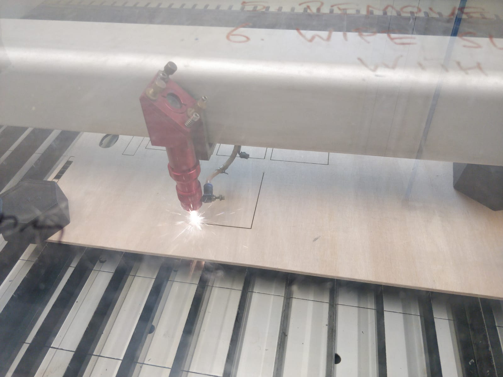
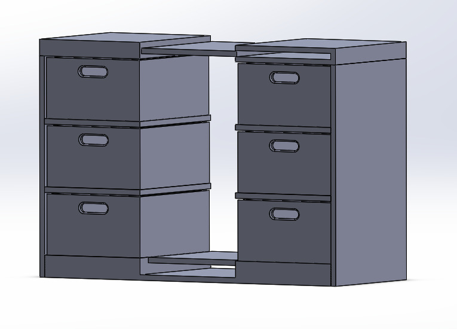

The challenge of designing a safe mechanism to lift the drawers out of their normal position has led to some innovative solutions. It was made more difficult by the decision that in order to be a useful product the drawers should also be able to pull out as usual. This led to the design below, which has a bracket that slots in and out of the back of the drawers. The hooked back and L-shape holds the moment of the drawer, and prevents it from tipping forwards off the lifting mechanism

The drawer it slots into is being prototyped by stacking sheets of wood, cut to exact dimensions using a laser cutter
The Moving Frame
This Bracket Moves into the correct position by being attached to linear bearings on guide rails. A fist prototype of this movement can be seen in the video below.
This concept was then refined into a design more apropriate for the size of a chest of drawers, with MakerBeam forming an outside frame on which the rear bracket can have two degress of freedom.
The Driving System
The position of the roller brackets is controlled by turning lead screws using stepper motors. These Brackets move along the beams on rollers.

The Drawer Layout
The drawers usually be supportd in a standard frame, but when they need to be moved they will rise up the central space. The top surface will be shut until the drawer reaches the top of the unit, at which point it will open up so the contents can be accesed.